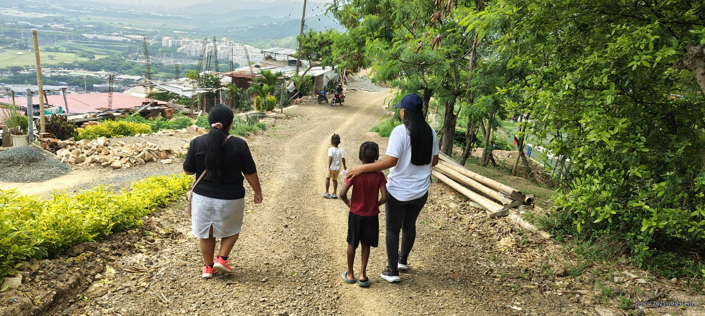
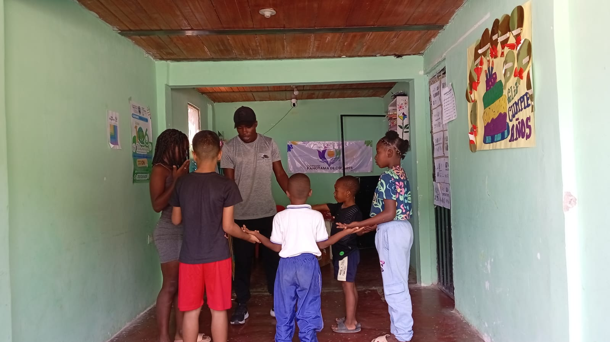
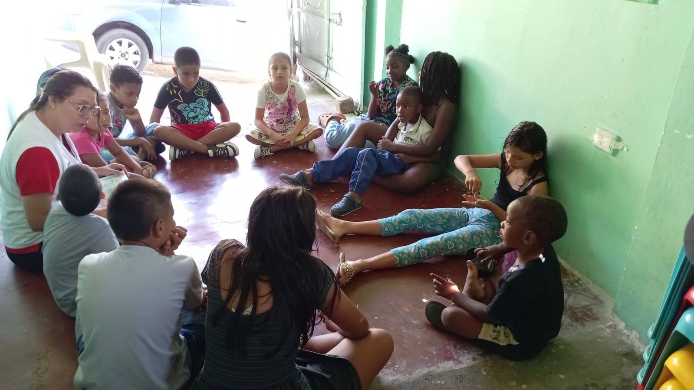
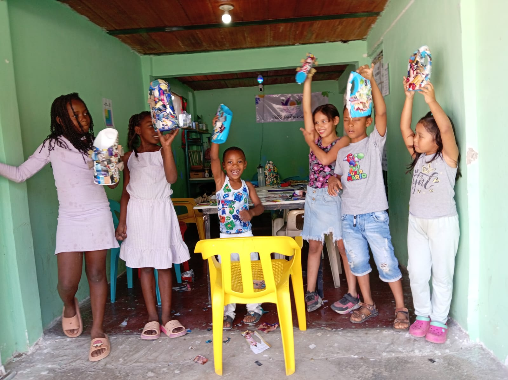
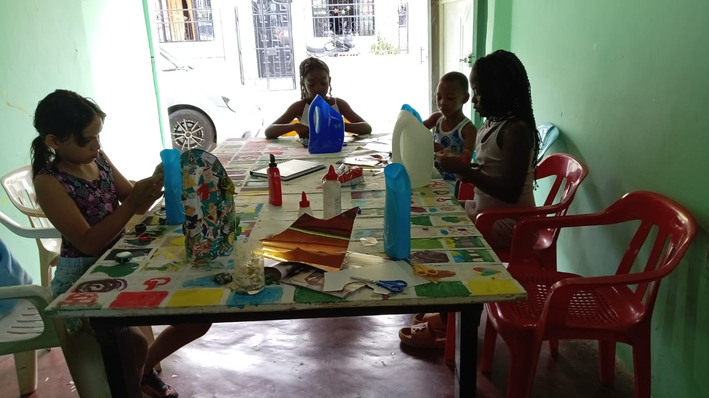
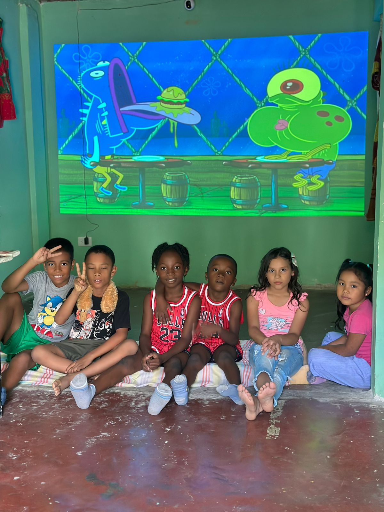
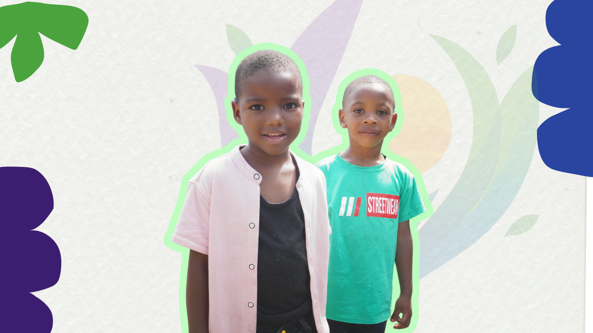

GALERÍA DE EVENTOS
Momentos que inspiran y transforman






×


Transformar vidas de niños, niñas y familias en el barrio Panorama Comuna 1 a través del arte, el deporte y la conciencia ambiental, promoviendo el desarrollo integral y la construcción de un futuro sostenible.
Ser una fundación líder en la transformación social del barrio Panorama Comuna 1, reconocida por nuestro compromiso con el desarrollo integral de la niñez y la promoción de entornos sostenibles y saludables.
Fundación Panorama de Colores nació hace más de 2 años como una iniciativa comunitaria para brindar oportunidades a niños y niñas en situación de vulnerabilidad. Desde entonces, hemos crecido y transformado la vida de más de 18 niños y sus familias.
Nuestros programas transformadores
Momentos que inspiran y transforman






Tu apoyo puede transformar vidas
Déjanos tu mensaje, pronto nos pondremos en contacto contigo
Ubicación: Carrera 7F 16H-10 Barrio Panorama Comuna 1- Yumbo Valle del Cauca, Colombia
Teléfono: +57 322 602 2056
Correo: Panoramadecolores@gmail.com